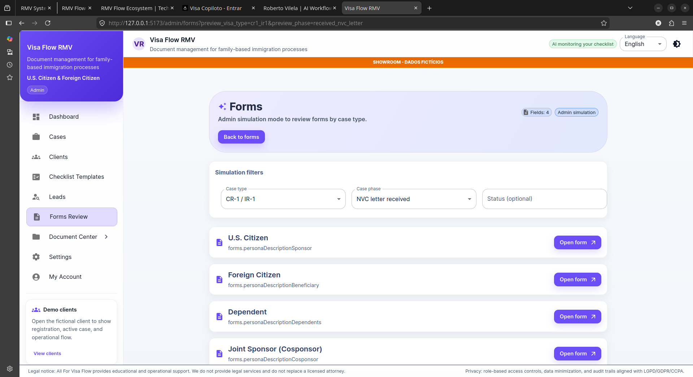
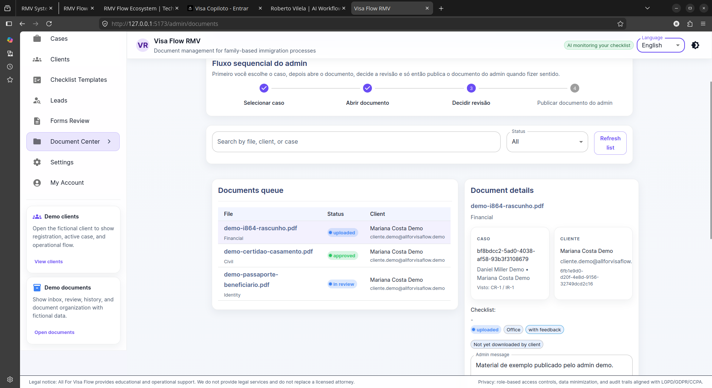

All For Visa Flow
Document-Preparation Operations, Run as a System
I worked inside U.S. visa document preparation and turned a scattered operation — messages, spreadsheets and manual follow-up — into a structured workflow: intake, document rules, status tracking, verification checklists and human review at every handoff.
This case describes an operational role — client document review, document guidance meetings, requirements, business rules, documentation, acceptance testing and supervision. Implementation was AI-assisted. Focused on document preparation and workflow support, not legal advice.
Operational Problem and Friction Context
U.S. visa document preparation is a sequence of dependent steps: each case has its own document set, each document has validity conditions, and each missing item blocks the next stage. Before I structured it, that sequence lived in people's heads and in separate channels.
Information dispersed across channels
Client details, document requests and case notes arrived by message, email and spreadsheet. There was no single place I could rely on to read the current state of a case.
No reliable status visibility
"Where is this case?" required asking a person. Status was reconstructed from memory or from scrolling a conversation, not read from a record.
Rework from incomplete inputs
The checklist existed, but it lived on paper or in email and WhatsApp messages. It was not shared in one place, so gaps surfaced late and I had to repeat the same request and redo the same review.
Knowledge concentrated in one operator
The mandatory document list was defined per category — K-1, CR and IR — but the mapping lived in people's heads. Absence or handover meant delay and inconsistency.
The measurable symptom
Case preparation could take up to 15 days — the timeframe set in the contract and communicated at onboarding, and generally the time the preparation itself took. Much of that time was not legal analysis: it was waiting, re-requesting, re-checking and searching for information that already existed somewhere.
Real Role and Responsibilities
My contribution was operational and definitional. I handled client documents day to day, reviewed what clients sent, and turned that operation into requirements, rules and acceptance criteria. I did not write the platform's source code independently; implementation was AI-assisted, and I validated the result against real cases while continuing to run the operation.
task_alt What I owned directly
- checkClient document handling. I received document notifications, opened and reviewed what clients sent, checked the information in the intake forms and in the data used for official forms, and identified documents that were incorrect or incomplete.
- checkClient follow-up. I notified clients when a document needed correction or resubmission, and tracked pending items until they were resolved.
- checkDocument guidance meetings. I held individual preparatory meetings to explain document requirements, answer questions and guide clients on the materials needed — document preparation, not visa interview simulations and not legal advice.
- checkRequirements gathering. I mapped the operation from the inside, step by step, and wrote down what the workflow had to capture, block or allow.
- checkBusiness rules. I worked from the mandatory document list for each category — K-1, CR and IR — and defined the validity conditions, dependencies between steps and the conditions under which a case could advance. The system generated the document list from the contract terms.
- checkDocumentation. I produced process descriptions, checklists and acceptance criteria another operator could follow.
- checkAcceptance testing. I tested the workflow with real cases, checked the outputs against the checklist, and requested correction when something failed.
- checkOperational supervision. I operated the workflow day to day, reviewed handoffs and kept the final decision with a person.
info What this case does not claim
- removeIndependent authorship of the platform's codebase or of corporate infrastructure.
- removeA technical implementation role. The implementation was AI-assisted and executed under my specification and review.
- removeLegal advice or legal responsibility for case outcomes. Document preparation and workflow support only.
- removeOwnership of a commercial software product. The system was an internal operational tool for one practice.
Why this distinction matters: the value of the case is not the code. It is the work of turning an ambiguous service operation into explicit rules, a visible process and a review gate — the part that determines whether a system is usable by real operators on real cases.
Workflow and Process Architecture
I structured the process front to back, with an explicit checkpoint between stages. Some steps were supported by the system, some were operational procedures I followed, and one was a human decision that stayed with me. I did not move a case forward until the checkpoint question had an answer I could verify.
Intake
I structured the capture of client and case data in one record: identity, case type, destination, dependents and initial documents. Intake stopped depending on a free-form message.
Eligibility and triage
I matched the case to its category — K-1, CR or IR — and the system generated the mandatory document list from the contract terms. Mismatches were caught before I asked the client for anything.
Structured forms
Where the workflow supported it, data was collected through fields with required rules instead of open text, so later steps received consistent inputs.
Document collection
Each requested item is tracked individually — requested, received, accepted or rejected. When a document was rejected, the reviewer selected it in the system and left a note for the client explaining what to correct.
Verification checklist
The checklist was paper-based or sent by email and WhatsApp. I completed it item by item, and it was my acceptance criterion — not an impression that the file "looked complete".
Human review and sign-off
I reviewed the assembled set against the checklist and decided whether it advanced. AI assistance could prepare and flag; it never approved a document set.
Status tracking and delivery
I kept a visible status and next action for each case, so I could answer the client without reconstructing history and the handoff to the next stage was explicit.
Control points and their purpose
| Control point | Question it answers | Failure it prevents |
|---|---|---|
| Case-type rule set | Which documents does this case require? | Requesting the wrong set and restarting later |
| Per-document status | What is still missing, and why was it rejected? | Repeated requests and lost context |
| Verification checklist | Is the set complete against the rule? | Advancing a case on impression instead of evidence |
| Human sign-off | Who accepted this case, and on what basis? | A decision advancing without my review |
| Status and next action | Where is this case now, and what happens next? | Client follow-ups answered from memory |



Interface captures of the operational base. They document the workflow structure described above; they are not a claim of authorship over the codebase.
Tools and Technologies Applied
I treated technology as an operational accelerator, not as the subject of the case. The stack existed to make rules enforceable and status visible; my role was to specify and validate the behaviour.
| Layer | Tool | Operational role |
|---|---|---|
| Interface and forms | React | Structured intake, document requests, checklist completion and status views used by the operator |
| Business rules and API | FastAPI | Generates the mandatory document list from the contract terms, validates inputs and exposes case state to the interface |
| Persistence | PostgreSQL | Single source of truth for clients, cases, documents, tasks and status history |
| Implementation method | AI-assisted development | Accelerated build under my specification, review and acceptance testing — not autonomous delivery |
hub Why this stack
Relational data with dependent steps needed a relational store. Rules that must hold for every case needed to live in one place, not in operator habit. A separate interface kept the operational base usable independently of any AI layer.
shield Where AI was allowed
AI assisted drafting, extraction and consistency checks inside defined boundaries. It did not decide eligibility, approve a document set, or replace the reviewer. Every assisted output passed through the same checklist as a manual one.
Validation Mechanisms and Measured Impact
Two figures describe the operation. They come from the workflow running with real clients and from the engagement history, and I state each with its scope — no derived percentage, no extrapolation to other practices.
cumulative client engagements
Inquiries, contracts and service requests handled across the operation — not a count of concluded immigration cases.
days for case preparation
The previous timeframe was up to 15 days, set in the contract and communicated at onboarding. With the workflow, preparation was completed in up to 4 business days, from first contact to a reviewed document set.
How the result was validated
- scheduleTested on real cases. I ran the workflow on real cases and compared the preparation time with the contractual timeframe of up to 15 days.
- fact_checkChecklist review. I verified each document against the checklist before accepting the set. Incomplete sets went back to the client with the specific item to correct.
- bug_reportCorrection loop. When a document was wrong or incomplete, I notified the client, tracked the pending item and reviewed the resubmission.
- person_checkHuman decision. No case advanced on an automated signal. I made the acceptance decision.
straighten What the numbers do not claim
- •The time range describes the process I tested. It is not a benchmark for other practices, case types or teams.
- •No percentage is stated, because the underlying comparison is a range of up to 15 days against a range of up to 4 business days, not a controlled statistical measurement.
- •Engagement volume is not a success rate. It does not imply approval outcomes, and it is not a count of concluded immigration cases.
- •There was no standardized per-case measurement system producing a documented historical series.
Delivery Status and Scope Limits
The workflow itself
Intake, document tracking, checklists and status ran with real clients. The operation is now being wound down as the focus shifts to RMV System, prepared to be offered to law firms.
The observed time range
Preparation in up to 4 business days was observed with real clients, as described in Section 05.
Legal and outcome claims
No approval guarantees, no legal advice, no claim of independent authorship over the codebase or of a production software product.
How to read this case in an interview
Problem: fragmented information, invisible status, repeated rework and tacit rules — Section 01.
Role: client document review, document guidance meetings, requirements, business rules, documentation, acceptance testing and supervision — Section 02.
Process: seven stages with explicit control points and a human gate — Section 03.
Tools: React, FastAPI and PostgreSQL as the environment where rules were specified and validated — Section 04.
Evidence: 200+ cumulative engagements and 15 → 4 days, with the limits of both stated — Section 05.
Limits: what ran with real clients, what is being wound down, and what is explicitly not claimed — Section 06.
Related pages
The same approach — clarify the operation, define the rules, validate with real cases, keep the decision human — is what I apply to every workflow implementation.